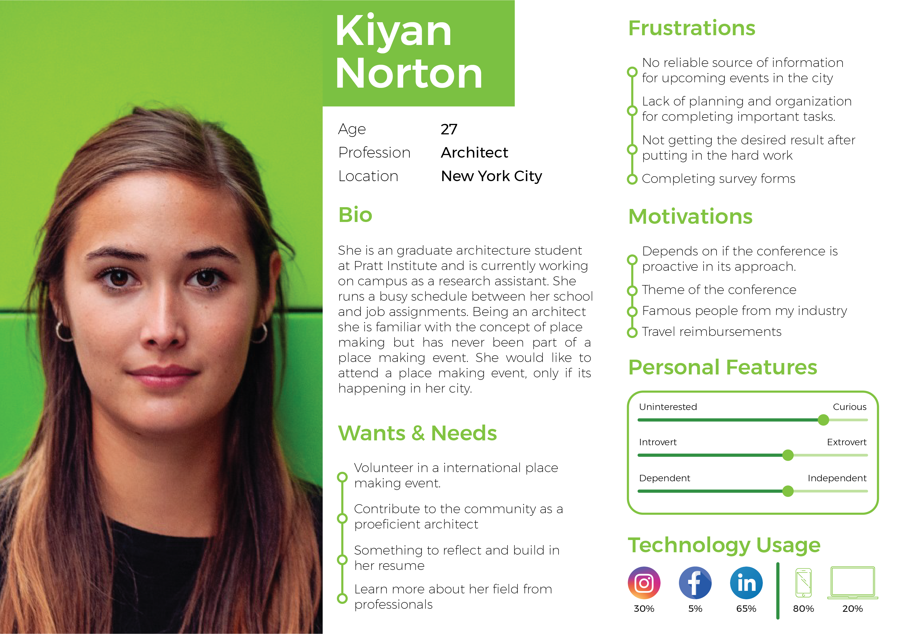

-
Client:
Project for Public Spaces’ (worked with CDX)
-
Guide:
Prof. Nancy Smith
. -
Team
Mayank Gupta, David Bradshaw, Devin Singh, Nicole Tominaga, Yichen Wang
-
Tools:
Adobe XD, Optimal
Workshop -
Project timeline:
14 weeks, Spring 2020
Placemaking week Website Redesign
Placemaking Week (a subset of Project for Public Spaces) is a weeklong global gathering of placemakers that emphasizes hands-on learning and innovative social events, while leaving behind a public space legacy in local and international host cities.
The aim of the redesign project was to restructure and enhance the fucntionalities of the desktop and mobile website. The major focus was placed on correcting the navigation of the website.
Inconsistent Navigation & Cluttered Information
The current placemaking week website is very detailed and text heavy, which is overwhelming for some users. The website also has a dynamic navigation which corresponds to a bad user experience.
These 2 factors hinder with the user’s ability to access information about the event, hence discouraging potential attendees from attending the conference.
consistent navigation & structured information
The goal of this redesign project was to provide users with an ease of access to the information and persuade them to become event attendees.
UX Researcher
Conducted an online survey along with 3 in-person interviews with prospective users to gather insights and created a persona (collaborated with the team members for user research).
Conducted 2 remote usability test with the low fidelity mockups to gather user insights.
UX Designer
I created the low and high fidelity mockups for the footer section and actively participated in improving the sitemap.
Understanding the Problem
The initial client presentation told us more about the organizations history and user demographics. The client wanted to refresh their visual identity and especially fix the dynamic navigation.
Research + Design + Test + Iterate
We combined the qualitative data from the 15 in person interviews and 10 usability tests and the quantitative data from the questionarre to gain a deeper understanding of user needs. This helped us broaden our prespective to cater to a larger demographic and further improve the user experience.
Students from Different Backgrounds
The user group I focused on are students, this is particularly interesting as only 5% of the total attendees were from the academic sector. Students are supposed to make up a notable section of audience for this website, as they are constantly looking to learn new things and grow as an individual. I consulted students from different domains to get a better insight, the backgrounds included were business, design, computer science and architecture.
Online Questionarre, Interviews & Remote User Testing
In order to better understand the user needs and concerns we conducted a user survey along with interviews and tested the exisiting website (placemakingweek.org).
Questionarre
An online questionarre was designed to collect quantitative about the preferences, demographics, tech backgrounds and experiences with conferences of our potential user group. This was filled by a total of 20 participants.
Observation Study
I conducted an observation study with 3 potential users to learn more about the user behaviors and patterns. The study aimed at understanding how the users interact with the website and discover information. While conducting the study participants were asked to think aloud, this helped us better understand the thought process of the user.
Inconsistent Navigation & Too much text!
The users were overwhelmed by the amount of text on the pages and the inconsitency in navigation menu. Following insights were revealed:
-
Landing page is not Informative
The landing page is text heavy and doesn't entice the user. 2 of the 3 observation study participants reported that they wouldn’t want to attend the conference based on the first impression of the website.
-
Dynamic Navigation causes confusion
The website features a inconsistent navigation menu which traps the user in a labyrinth with "back" button being the only rescue.
-
Text heavy website
The users were not sure whether reading through all the content is gonna help them find what they are looking for.
"[This is] too much text, I am not gonna read through all of this."
User Persona
Based on the insights from the user research, I created the persona for the target user group of our redesign - Architechture Students.
Navigation is the Priority
The preliminary research made it clear that fixing the information architecture of the website is a priority. Our high level goals were:
- Have a consistent navigation menu across the website
- Simplify website navigation for every user group
- Using an intuitive labelling system
Card Sorting
For our card sort, we defined 38 cards based on a combination of previous user input,terminology used from the current Placemaking Week website, and terminology used by other well-known conferences. The card sort was conducted using 38 cards with 11 participants.
Although the card sosrt partially failed, as we got 61 different categories at the end of it. This revealed a general confusion amongst the users with our labelling.
Tree Tetsing
Taking the insights from the card sort into consideration we modified the labelling system and conducted our tree testing with this modified system. This study was administered to 10 participants, 5 of which were conducted in-person and 5 were conducted remotely. The tree mapping study included 7 short tasks to be completed by the user.
New Information Architecture
Using the insights from the card sorting and tree testing study we redesigned the information architecture. The goal was to make a cosistent and simple labelling system that helps the user easily navigate through the website.
Although after careful reconsideration and one more iteration we reordered the final sitemap on the high fidelity prototype.
Task Flows
Based on the user persona and goals we defined two task flows.
Mind Mapping
We sketched some initial wireframes to mind map our ideas about the generic layout of the website.
Paper Prototype
In order to verify our ideas we made some paper prototypes and tested them with potential users. The idea was to conduct the tests in persona, but due to the COVID situation we had to digitize our prototypes and test them remotely. Every team member was responsible for sketching one section, I was responsible for the header and footer sections. I drew 2 iterations for the header and 3 for the footer.
We tested both the tasks using the paper prototypes with 5 users. We gained some useful insights to futher improve our designs.
- Users expected that clicking on the picture of the speaker would load more information.
- The order of the navigation menu was confusing for some users, as they expected to see "About" button first.
The Visual Revamp
The aim of this redesign was to retain the history and identity of the organizations, while tweaking the visual components to make the website asthetically pleasing.
Colour
We adopted a color theme that inherits the legacy of the previous placemaking website and enhance the contrast at the same time.
Typography
The entire website uses Open Sans typeface. The type scale provides the different indentations required for the mobile and desktop website.
Responsive Grid System
The website has a responsive 12 column grid with flexible padding for every screen width.